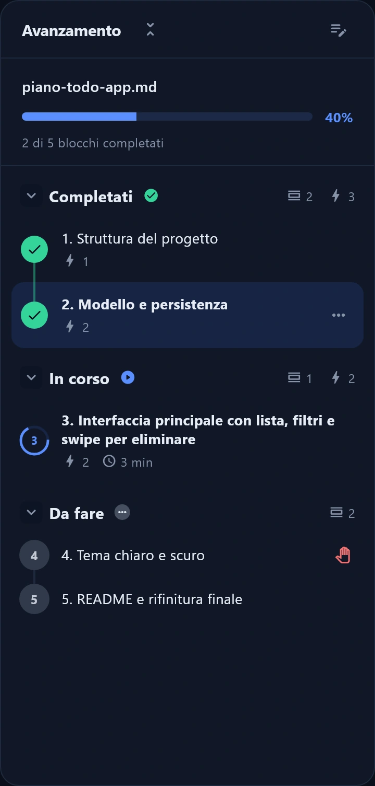

Scrivi il piano.
L'agente lo porta a termine.
AutoLoop affida a un agente AI un piano di sviluppo un blocco alla volta. Lo richiama ogni volta che si ferma, verifica il lavoro e fa un commit prima di passare al blocco successivo.


Gli agenti scrivono codice da soli.
Ma si fermano a ogni passo.
«Avevo piani di sviluppo completi, ma l'agente aspettava che gli dicessi di continuare. Il collo di bottiglia ero io.»
Adrian Chiriac · ideatore di AutoLoop
Uno script Python, Codex Autonomous Loop: un piano in JSON, solo Codex, solo da terminale. Funzionava, ma andava preparato apposta ogni volta.
Un'app con una finestra: si sceglie un piano in Markdown o in testo, si sceglie Codex o Claude e si preme Avvia. L'avanzamento si segue a colpo d'occhio, e ci si può fermare quando si vuole.
Un blocco alla volta,
finché il piano è finito.
Il piano in blocchi
Titoli Markdown, elenchi numerati o checkbox: AutoLoop divide il piano da solo. Le caselle già spuntate contano come fatte.
Un'invocazione alla volta
Ogni volta una sessione nuova di Codex o Claude, con il piano, il blocco corrente e la memoria in PROGRESS.md.
Verifica e commit
Quando l'agente dice di aver finito, gira il tuo comando di verifica. Solo se passa arriva il commit, e si va avanti.
Richiamo e limiti
Se si ferma, viene richiamato. Se resta in silenzio troppo a lungo, viene interrotto. Se la quota finisce, aspetta e riprova.
Ore di lavoro dell'agente,
leggibili a colpo d'occhio.
Avanzamento
I blocchi divisi per stato, ognuno con invocazioni, durata e token.
- Completati, In corso, Bloccati, Da fare e Saltati
- Fermati dopo questo blocco, per controllare il lavoro prima di riprendere
- Ogni blocco si può segnare come fatto, rimettere in coda o saltare

Attività
Per ogni blocco le invocazioni dell'agente: messaggi, comandi, verifiche, commit ed esito.
- Comandi mostrati come li ha scritti l'agente, con i percorsi relativi al progetto
- Filtri per vedere solo i messaggi, i comandi o gli eventi
- Conservata tra un avvio e l'altro

La mappa nel tempo
In basso, tutta l'esecuzione su una linea: ogni icona è un messaggio, un comando o un esito, nel momento in cui è successo. Un clic porta alla riga corrispondente nell'Attività.

Impostazioni per progetto
Ogni cartella ricorda le sue: agente, modello, verifica, regole. Ogni campo ha una ⓘ che spiega cosa fa.
Account e profili
Più account per Codex e Claude, separati da quelli di sistema. L'accesso passa dalla procedura ufficiale della CLI.
Modalità protetta
Di base l'agente lavora nella sandbox della cartella di progetto. L'accesso completo si sceglie solo se serve.
Da uno script a un'app,
in cinque giorni.
AutoLoop nasce dal mio Codex Autonomous Loop. Le tappe vengono dalla cronologia dei commit del progetto.
Codex Autonomous Loop
Lo script Python: piano JSON, solo Codex, solo terminale.
Il primo nucleo
L'app Windows: blocchi, richiamo, verifica e commit. Codex e Claude, account e profili.
Un pannello di controllo
Impostazioni per progetto, avvisi prima di partire, modalità dimostrazione.
Leggere un'esecuzione
Attività per blocchi e invocazioni, avanzamento diviso per stato.
La mappa e le rifiniture
Su un ramo di prova: la mappa nel tempo, la pausa dopo un blocco, le ⓘ.
La prima versione
Collaudo con Codex e Claude veri, installer, release 0.1.0.
Io davo la direzione.
Poi aprivo l'app.
Idea, priorità, esperienza
Cosa costruire, come doveva sentirsi l'app e cosa correggere dopo averla provata.
Codice e verifiche
Implementazione, test automatici, screenshot per controllare l'interfaccia e collaudo con le CLI reali.
Un'idea
Un bisogno, o qualcosa da migliorare.
Un confronto
Una direzione, o le opzioni messe a confronto.
La realizzazione
Codice, test e screenshot.
La prova nell'app
La demo aperta, le schermate provate una per una.
Le correzioni
Cosa cambiare, e si riparte.
Gli esperimenti più grandi su un ramo a parte: se non convincevano, si tornava indietro.
Dare autonomia a un agente
è decidere quando fermarlo.
I limiti prima di tutto
Tentativi, tempi massimi, verifiche e pausa dopo un blocco: sono queste regole a rendere sicuro lasciarlo lavorare da solo.
Un'esecuzione si deve leggere
Se dopo un'ora non si capisce dov'è arrivato l'agente, l'autonomia non serve. Gruppi, invocazioni e mappa nascono da qui.
Provare con l'agente vero
I test con un agente finto non bastano: il collaudo con Codex e Claude reali ha trovato problemi che i test non vedevano.
Prova AutoLoop sul tuo prossimo piano.
Gratuito, per Windows. Serve Codex CLI o Claude Code con il login già fatto.